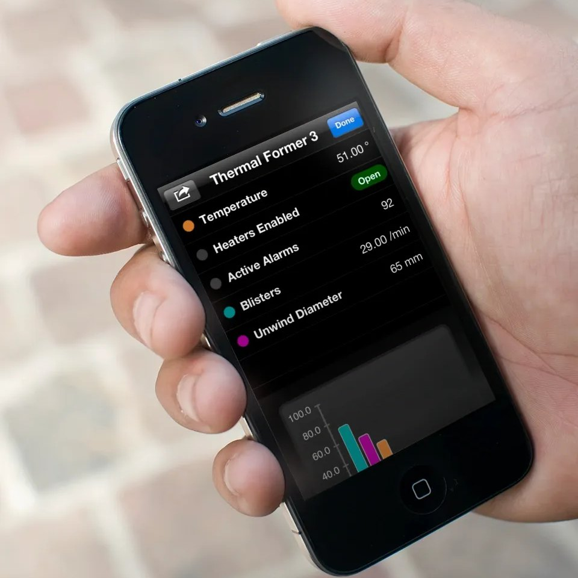

Scan a machine’s QR code or asset tag to see live process data, manuals, videos and forms related to that process equipment.

Scan a machine’s QR code or asset tag on a phone, tablet or RealWear HMT. Technicians can immediately address production issues, not after a walk to find the resources they need.
Explore iQagentTools designed with the people who run and maintain equipment, not for a boardroom slide.
Install on your own server, in the cloud or on a VM, and be useful the same day. No long implementation project.
Maps to the asset tags and barcodes you already use, and reads live data from your existing OPC and ODBC sources. Nothing to rip and replace.
Talk to the team that writes the software, not a call center.
A 30-minute call is enough to see whether iQagent fits. We’ll show you the product on your kind of equipment and answer your questions.